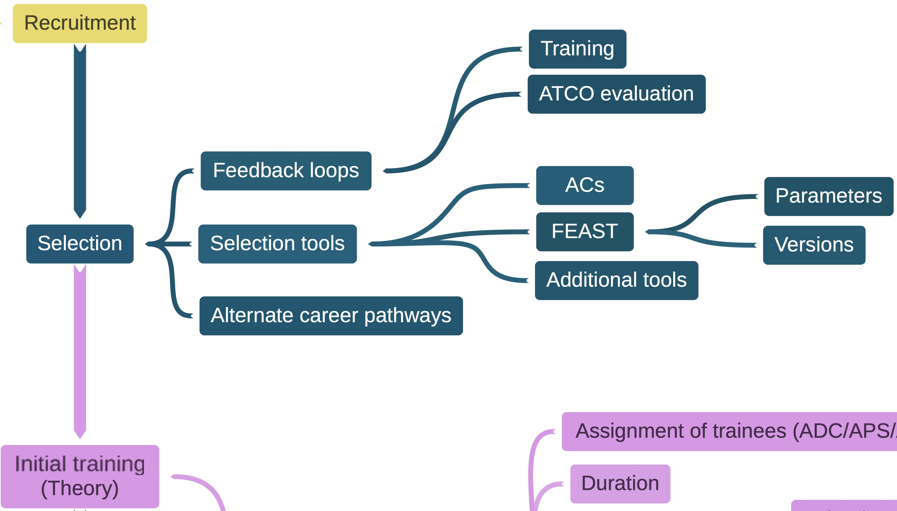

Selecting for successful progression
Selection aims to identify candidates who can complete training and perform safely in the operational environment. Evidence from training outcomes can help improve the process.
Selecting candidates

Selection is the gateway that determines whether applicants become ATCO students. It also features a turning point in the perspective of the process. We discussed how adjusting working arrangements and tweaking recruitment practices may increase the influx of people applying for ATCO positions. Selection, however, is all about screening applicants and reducing the pool, hopefully to find the best, most capable, and most suitable candidates.
We already discussed the importance of specifying the ideal candidate profile when we examined the recruitment phase and defined the target population. Selection is the last point in the process, where this profiling and the screening of applicants based on its results can be done by ANSPs without incurring suffering major losses in the form of sunk training costs. When screening the applicant pool, ANSPs should have a very clear and detailed specification of the candidates they are seeking, including cognitive profiles, learning capacity, adaptability, personality traits, motivation, baseline competencies, educational background, experience and expertise, language proficiency, and any other relevant aspects. There are, of course, medical requirements that must also be met.
As if creating such a profile were not difficult enough, ANSPs also need to consider how the requirements and challenges ATCOs will face may evolve throughout their careers. The introduction of new ATM concepts, system functionality, cross-border operations, etc., may alter the day-to-day operations of ATCOs and make certain capabilities more important. On the other hand, the selection process must also ensure that the selected candidates are suitable to perform their duties under the current circumstances and within the existing operational environment.
The relevance of alternative ATCO career pathways in the selection process is that they likely yield candidates who, despite not meeting the criteria to enter the ATCO training, may be valuable candidates for alternative positions.
General screening practices
As with all selection processes, ANSPs screen the applicants based on their CVs and the general information provided during the application process. At this point, the ideal candidate profile must be accurately translated into CV criteria; otherwise, potentially valuable candidates may be lost in the process.
Apart from combing through CVs and application letters, ANSPs can also utilise tools that are not specific to the ATCO profession but screen applicants for certain cognitive and psychological aspects. These tools are more accessible than FEAST (see next point) for both applicants and ANSPs, making the process more efficient. With the rapid development of data analysis, machine learning, and AI applications, these selection tools deliver strong results when the selection criteria are well-defined.
FEAST
EUROCONTROL’s FEAST toolkit supports selection through tests of cognitive abilities, language proficiency, multitasking and personality-related characteristics. European ANSPs use different combinations of selection tools.
While the FEAST is a standard tool in the sense that ANSPs cannot change the general contents and procedures included in the toolkit, they can still set certain parameters that determine how thorough the screening is (i.e., define thresholds for the tests' criteria, which determine who passes). Most ANSPs use the default settings, though, for example, Slovenia Control sets parameters more strictly than others.
Assessment Centres
Assessment centres (ACs) are widely used selection tools in HR across all industries. The central concept is that candidates are placed in a pre-designed, synthetic working environment where they must solve problems, follow instructions, and interact with other candidates, typically while being observed by a committee of selection experts. The theory behind the use of ACs is that candidates behave differently in interviews and in "real-life" situations, and that a well-designed AC can closely replicate the candidate's future working environment, enabling the selection committee to observe how the candidate is likely to perform. ACs are typically used to reveal behavioural patterns, measure stress tolerance, assess social capabilities and cooperation skills, and other "soft" competencies.
While ACs are recognised as powerful selection tools, they are also the most expensive and time-consuming (their effectiveness increases with the length of the exercise), as they require both the candidates and the selection team to be physically present during the process.
Several ANSPs in Europe reportedly use ACs in the selection of ATCOs, in various setups and settings. Some examples even include applicants participating in rounds of simulated ATC exercises.
Special case: pushing selection after the initial training
ANSPs may also decide to delay candidate selection until after applicants have completed the initial training phase (see the next logical step). In this case, the same general principles and issues apply; however, the initial selection and screening may be conducted by the training organisations managing the initial training rather than by the ANSP. This approach is followed, for example, by Fintraffic ANS in Finland, where applicants must hold an ATCO student's licence to enter the selection process. While this is a major difference from the ANSP's perspective, it does not change the logical process or the key considerations of the selection process.
Selection challenges and measures
Selection encompasses the processes used to assess the suitability of candidates for entry into the ATCO training process. These processes seek to identify individuals with the cognitive, behavioural, medical and personal characteristics required to successfully complete training and perform safely in operational environments. As the gateway between recruitment and training, Selection plays a critical role in determining both the quantity and the quality of future controllers entering the workforce pipeline.
Selection received Medium Incidence and High Severity classifications. Its challenges were reported by a large share of ANSPs, indicating a widespread constraint on workforce development and training performance.
The consultation process revealed broad agreement among ANSPs regarding the importance of improving the ability of selection systems to identify candidates most likely to succeed during training and operations. Stakeholders consistently recognised that selection is not simply a filtering mechanism, but a fundamental determinant of future training outcomes, workforce quality and operational performance.
However, differences were observed regarding the tools, methodologies and criteria used to assess candidates. While some ANSPs rely heavily on established aptitude-testing frameworks, others have progressively incorporated behavioural assessments, interviews, personality profiling and assessment centres into their selection processes. Stakeholders also differed in their views regarding the predictive value of existing tools and the extent to which current selection systems adequately capture the competencies required in future operational environments.
The challenges identified within Selection primarily concern the ability of current assessment processes to accurately identify candidates capable of successfully progressing through training and operating effectively as controllers. Stakeholders repeatedly highlighted concerns regarding the predictive validity of selection methods, the assessment of non-technical competencies and the efficiency of the selection pipeline itself.
Challenges reported in Selection (Source: Consortium assessment)
| ID | Challenges | Rationale | ANSPs reporting |
|---|---|---|---|
| H-S.1 | Difficulty assessing non-technical competencies | Competencies such as trainability, teamwork, communication, resilience and behaviour under pressure are difficult to assess consistently and may not be adequately captured by existing selection methods. | 8 (47%) |
| H-S.2 | Limited predictive accuracy of selection systems | Existing selection methods do not always reliably predict which candidates will successfully complete ATCO training and progress to operational endorsement. In some cases, assessment results show only a limited correlation with subsequent training performance. | 8 (47%) |
| H-S.3 | Limited feedback between training outcomes and selection criteria | Information on training success and failure is not systematically used to refine selection methodologies, reducing the ability of organisations to continuously improve candidate assessment processes. | 7 (41%) |
| H-S.4 | Medical assessment constraints | Medical examinations may introduce delays, additional costs and administrative complexity due to limited availability of certified aeromedical assessors and differences in the application of medical requirements across jurisdictions. | 7 (41%) |
| H-S.5 | Lengthy selection processes | Selection procedures may extend over several months, increasing the risk of losing suitable candidates to alternative employment opportunities before they enter training. | 5 (29%) |
| H-S.6 | Reduced validity due to test preparation and coaching | The growing availability of preparation material for selection tests may undermine their ability to distinguish genuine aptitude from familiarity with the assessment process. | 4 (24%) |
The challenges identified within Selection fall into two closely related categories: improving the ability of selection systems to identify future successful controllers and improving the efficiency of the selection process itself.
The most consistently reported concerns relate to the predictive capability of current selection methodologies. Several ANSPs highlighted that existing tools do not always provide a reliable indication of future training performance, particularly when assessing non-technical competencies such as communication, teamwork, trainability and performance under pressure. Stakeholders also noted that selection systems frequently operate as isolated processes, with limited feedback from subsequent training outcomes to inform future improvements.
At the same time, a number of ANSPs identified operational challenges affecting the efficiency of the selection pipeline. Medical assessments were frequently reported as a source of delay and inconsistency, while lengthy recruitment and selection procedures increase the risk of losing strong candidates before training begins. Concerns regarding coaching and test preparation further reinforce the perception that current selection systems may not always provide the most accurate representation of candidate suitability.
Taken together, these findings suggest that improvements in Selection are likely to derive not only from more rigorous assessment methods, but also from stronger integration between recruitment, selection, training and operational performance data. As Selection directly influences the characteristics of individuals entering the training process, weaknesses at this stage have the potential to affect all subsequent stages of the ATCO management cycle.
The identified solutions focus on improving both the predictive capability and the efficiency of selection systems. Most measures seek to strengthen the relationship between selection outcomes and future training success, while a smaller number aim to reduce avoidable delays and losses within the selection process itself.
Main solutions for Selection (Source: Consortium assessment)
| ID | Solution | Challenges addressed | Time horizon | Control over the solution | Model variables affected |
|---|---|---|---|---|---|
| H-S.BP.1 | Use training and operational data to refine selection criteria | H-S.1 H-S.2 H-S.4 | Medium | Internal | Success rate |
| H-S.BP.2 | Adjust selection thresholds based on observed performance | H-S.2 | Medium | Internal | Success rate |
| H-S.BP.3 | Optimise the sequence of selection activities | H-S.4 H-S.5 | Medium | Internal | Intake |
| H-S.BP.4 | Incorporate behavioural and assessment-centre evaluation methods | H-S.1 H-S.2 H-S.6 | Medium | Internal + Technology | Success rate |
| H-S.BP.5 | Adopt assessment methods less vulnerable to coaching effects | H-S.2 H-S.6 | Medium | Internal + External | Success rate |
| H-S.FP.1 | Benchmark and harmonise evidence-based selection criteria | H-S.1 H-S.2 | Medium | Internal +External | Success rate |
| H-S.FP.2 | Develop common assessment-centre frameworks across ANSPs | H-S.1 H-S.2 H-S.6 | Long | Internal +External | Success rate |
| H-S.FP.3 | Promote harmonisation of medical assessment requirements | H-S.4 | Long | Internal + External | Success rate |
The identified solutions recognise that improvements in Selection are most effective when they strengthen the relationship between candidate assessment and future training success. Accordingly, the majority of measures influence the Success Rate variable by increasing the proportion of trainees who successfully progress through the training process.
Several best practices focus on improving the predictive validity of candidate assessments. The use of historical training and operational data, behavioural assessment tools and more sophisticated evaluation methodologies seek to ensure that selection outcomes reflect the competencies actually associated with success in operational environments. These measures directly address concerns regarding both the predictive capability of existing selection systems and the difficulty of evaluating non-technical competencies.
A second group of solutions focuses on increasing the efficiency of the selection pipeline. Optimising the sequencing of selection activities and reducing unnecessary bottlenecks within medical assessment processes may reduce candidate attrition before training begins and improve the overall flow of applicants through the recruitment process. Similarly, measures designed to reduce the influence of coaching and test preparation seek to preserve the integrity and discriminatory power of selection systems.
The future practices build on these principles by promoting greater consistency across the European ATM network. Benchmarking selection criteria, developing common assessment methodologies and harmonising medical requirements all seek to improve comparability between ANSPs while facilitating the identification and dissemination of effective practices. Together, these measures aim to increase both the efficiency and the effectiveness of Selection as a critical determinant of future workforce performance.